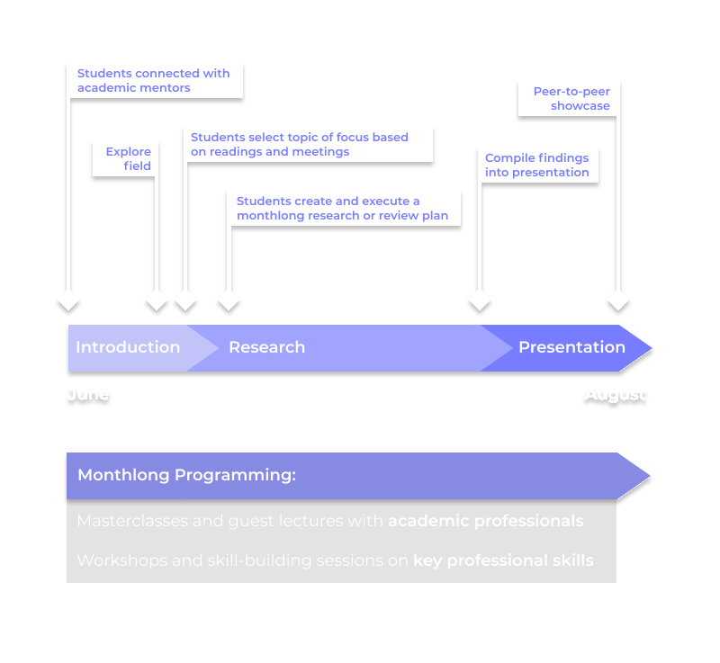
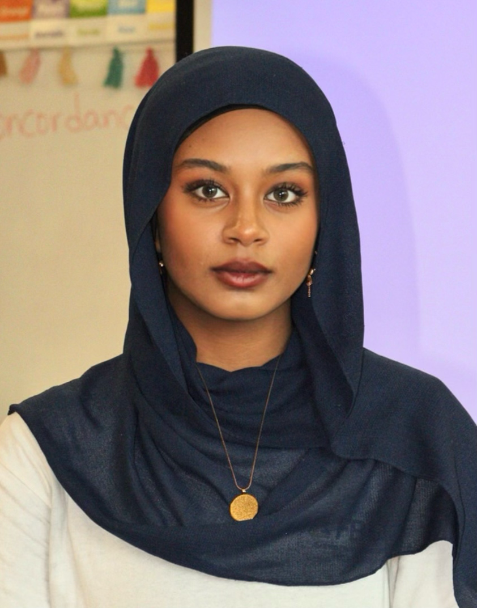
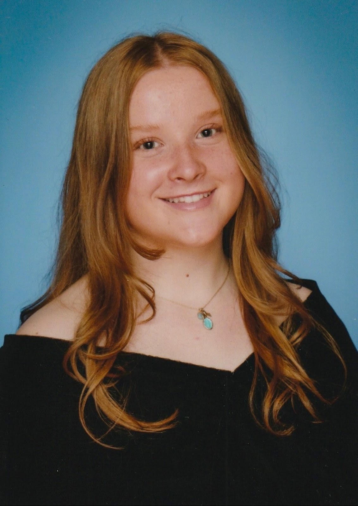
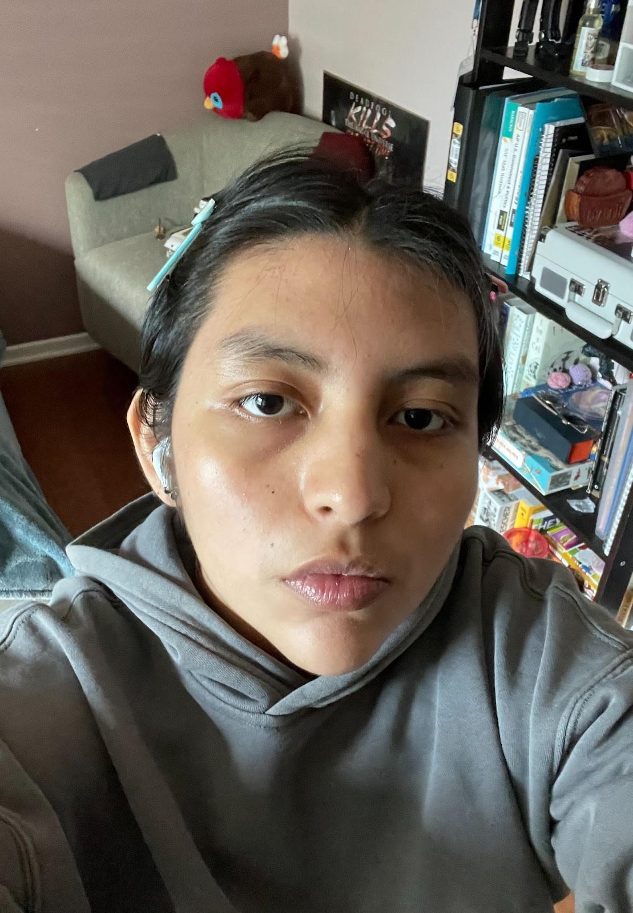
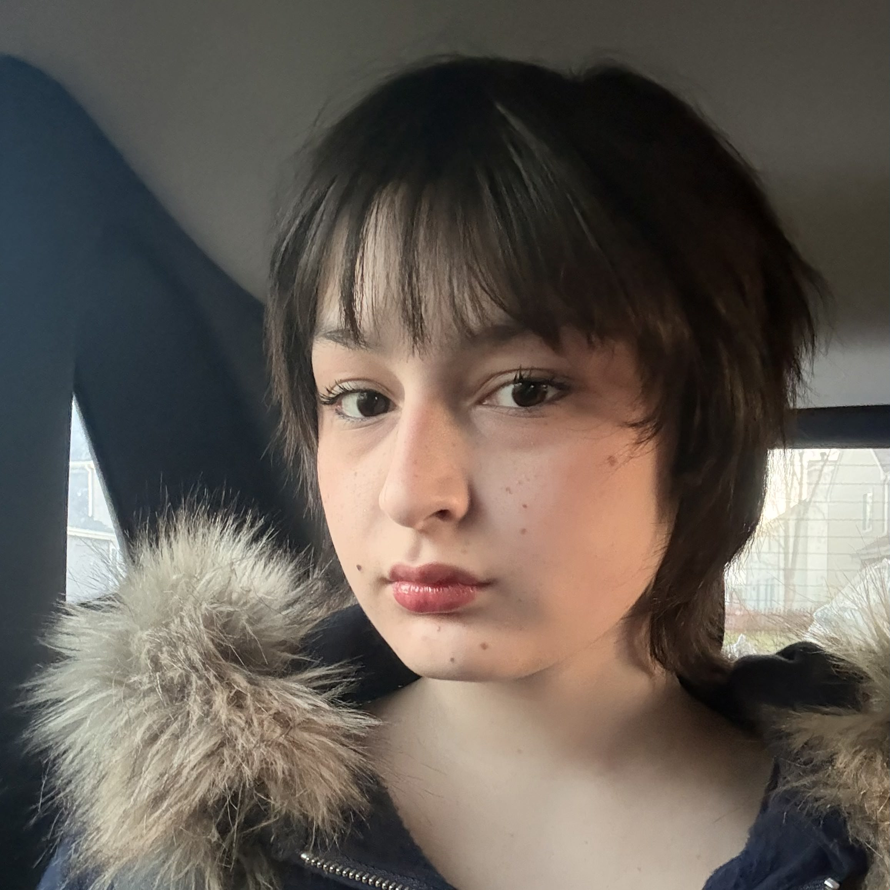

Rebecca Monge
Co-Founder
Stanford Graduate
"My co-directors and I founded TCP as a way to make professional mentorship accessible to high school students across the US, a cause that I believe in profoundly."
A six-week, remote academic mentorship for high school students.
Want to become an academic mentor this summer? Email info@copulaprogram.org.
The Copula Program is a six-week remote summer mentorship that connects ambitious high school students from underrepresented backgrounds with academic mentors. Since 2020, we've helped over 100 students explore new fields and create meaningful research projects.
Our mission is simple: empower students to go beyond the high school curriculum and discover their academic potential. With guidance from experienced mentors, participants gain hands-on research experience and the skills to pursue academic careers.
Program Dates: June 22nd - August 1st
Over six weeks, students plan and create a capstone project alongside seasoned academic mentors. Along the way, students enjoy guest lectures, masterclasses from academic professionals, and skill-building workshops.

Copula is Latin for "Connect", which has always been the main goal of the program. We strive to bridge the gap between high school students and accessible, affordable academic research. Through a free and remote mentorship, students are able to work 1-on-1 with an academic mentor experienced with their field of interest. By connecting mentees with mentors in specialized disciplines, TCP sparks a passion for academic exloration that lasts far beyond the program.
Hear from our alumni about their experiences in The Copula Program and how it shaped their academic journey.
Applications for the 2026 Cohort are now closed. Decisions will be released by June 2026.
Application ClosedApplicants to the Copula Program should currently be enrolled in high school and reside within the United States. Priority will be given to current 10th and 11th grade students, though we have previously accepted 9th and 12th grade students.
We encourage students with no prior research experience to apply. There is no application fee.
Co-Founder
Stanford Graduate
"My co-directors and I founded TCP as a way to make professional mentorship accessible to high school students across the US, a cause that I believe in profoundly."
Co-Founder
Harvard Graduate
"We started TCP out of a desire to share our institutional knowledge, making more students aware of what academia can offer. But, it's also been an opportunity to introduce education in of itself, focusing not on an end product but the learning process itself."
Co-Founder
Brown Graduate
"The Copula Program is the best way for students to gain real research experience and meet a community of like-minded students."
Applicants should be current high school students. Incoming high schoolers/8th graders will not be accepted.
Citizenship status will not be asked for and is not relevant to the application. Applicants must reside/live within the United States at the time of applying. International students will not be accepted.
If you are accepted into the program, we will try our best to pair you with a mentor who specializes in a field that relates to your interest. If there are no mentors available for your specific field of interest, you will be paired with a mentor who works in an adjacent field.
In relation to summer programs, The Copula Program should be your priority, and you should dedicate your time to the mentorship over other summer programs. We advise against participating in other programs while participating in The Copula Program. On the application, it is mentioned that paid summer jobs are an exception. This is true for most summer jobs, but if you are participating in a paid summer internship, please communicate with the co-directors before confirming your participation in The Copula Program. We want our students to be 100% sure about their participation and devotion to the program.
Our program is directed towards students who do not yet have any prior research experience. It is strongly encouraged that students that do have previous research experience refrain from applying. We aim to benefit students with no prior experience and are most determined to have their participation in the program.
On your application, we ask questions about income, ethnicity, and other aspects of identity to develop an idea of which students might benefit the most from our program. Your information will not be shared with anyone nor will it be copied or distributed.
Our focus is on expanding educational opportunities to all students who apply that align with our mission. There is no set "acceptance rate"; we are determined to provide mentorships to as many academically driven students as possible.
After submitting your application, we will review it and determine who out of the applicant pool is the most academically driven and will benefit the most from our program. After our initial assesment, semi-finalists will be interviewed as a group. From the interviews, finalists will be decided.
Sadly, we do not have enough mentors to accept every student who submits an application. We wish to help as many students as possible, but have a finite number of professors and researchers to help us out.
Reference letters or letters of recommendation are neither required nor requested on the application.
Your writing sample should be an essay or writing sample that you have submitted for a class in school. Try your best to upload a sample which you believe is your best work. Please upload it on the application form as a PDF file. Links (https://...) to Google Docs or Microsoft Word documents will not be reviewed.
Test scores such as SAT or ACT scores are not requested nor are required for the application.
Our co-directors are previous Copula mentees and interns working to expand student research opportunities!

Mentored by Ms. Keziah Anderson, studied women's activism and media portrayal in Sudan

Mentored by Ms. Keziah Anderson, studied the effects of U.S. infrastucture on indigenous communities

Mentored by Dr. Chelsea Dyer, studied Ecuadorian oil industry, Amazonian indigenous policy

Mentored by Dr. Fei Xia, studied photonics, applied physics, medical imaging technology